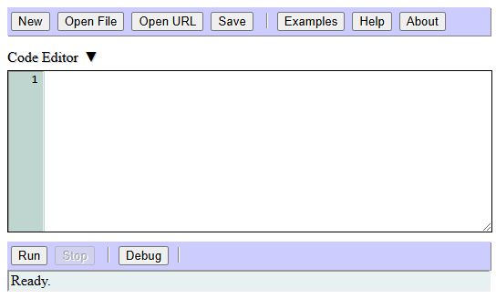

The code editor is the main section of Logan BASIC, located at the top of the page:
The large text box control is where you write your program's code. Above this text box are commands for creating, opening, and saving program files, as well as running example programs and getting help. Located at the bottom are commands for running and debugging the program, and a status bar for displaying the current state of the program.